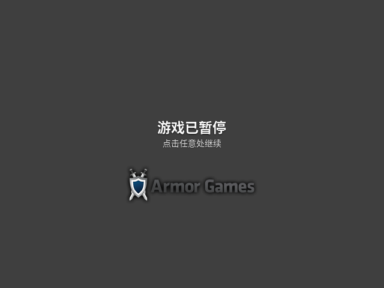

一与一的故事需要支持 Canvas 的浏览器。
使用方向键移动。按 X 或上方向键跳跃。按 Z 或 C 想起另一个人并切换控制。按 R 重开本关，按 M 开关声音。触屏设备可使用屏幕上的按钮。

旋转设备以获得更大视野
一与一的故事
正在载入…
如果此提示一直停留，请在启用 JavaScript 的 Chrome、Edge、Firefox 或 Safari 中打开本页；也可以在项目目录运行
npm start
。
本游戏需要启用 JavaScript。